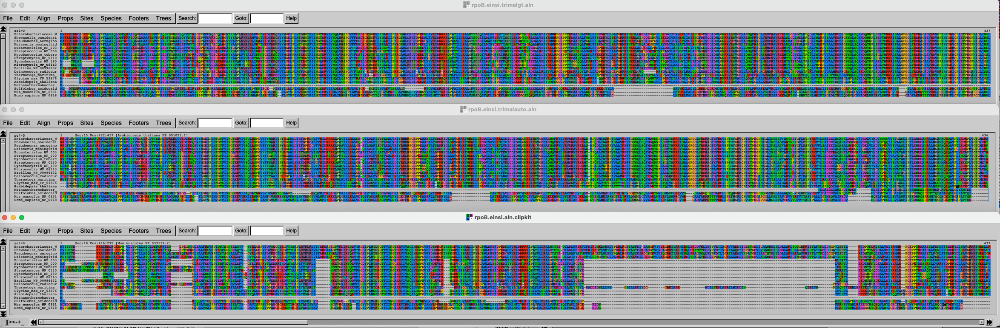
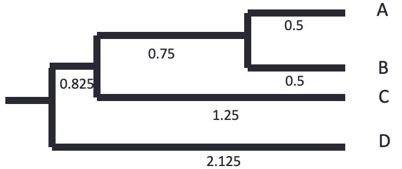
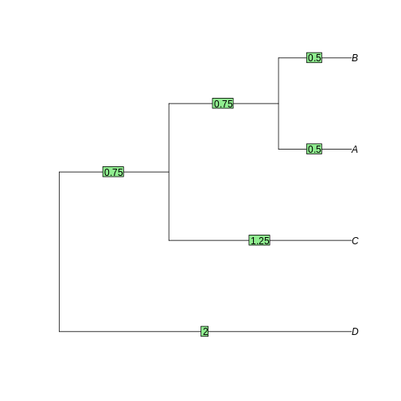

Multiple sequence alignment and phylogenetics
Last updated on 2026-04-21 | Edit this page
Estimated time: 240 minutes
Part 1: Multiple Sequence Alignment (MSA)
Overview
Questions
How do you align multiple sequences?
Why is it important to properly align sequences?
How do you build a simple, distance-based phylogenetic tree?
How do you build a phylogenetic tree with more advanced methods?
How do you ascertain statistical support for phylogenetic trees?
How does random genetic drift influence fixation of alleles?
What is the influence of population size?
Objectives
Use
mafftto align multiple sequences.Test different algorithms.
Learn the basic of phylogenetics tree building, taking the simplest of the examples with a UPGMA tree.
Learn how to use phylogenetics algorithms, neighbor-joining and maximum-likelihood.
Learn how to perform and show bootstraps.
Understand how population size influences the probability of fixation of an allele.
Understand how slightly deleterious mutations may get fixed in small populations.
Introduction
In this episode, we are exploring multiple sequence alignment (MSA).
In the first task, you are going to use mafft
to align homologs of RpoB, the β subunit of the
bacterial RNA polymerase. It is a long, multi-domain protein, suitable
for showing issues related to MSA.
In the second task, you will trim that alignment to remove poorly aligned regions.
But first, go to your own folder and create a phylogenetics subfolder. You will use the alignments for other tutorials as well.
Task 1: Use different flavors of MAFFT and compare the
results
Start by finding the data, which is a fasta file containing 19 sequences of RpoB,
gathered by aligning RpoB from E. coli to a very small database
present at NCBI, the landmark
database. These sequences are a subset of the sequences gathered in the
previous exercise on BLAST.
The file is available in
/proj/g2020004/nobackup/3MK013/data/.
Challenge 1.1: prepare the terrain
The course base folder is at
/proj/g2020004/nobackup/3MK013. Go to your own folder,
create a phylogenetics subfolder, and move into it. Also,
start the interactive session, for 4 hours. The session
name is uppmax2026-1-93 and the cluster is
pelle.
Challenge 1.2: copy the file
Copy the file to your newly created phylogenetics
folder. Use a relative path.
Use the ../../ to see what’s two folders up, and then
data/rpoB/rpoB.fasta
Renaming sequences
Look at the accession ids of the fasta sequences: they are not very informative.
OUTPUT
>WP_000263098.1 MULTISPECIES: DNA-directed RNA polymerase subunit beta [Enterobacteriaceae]
>WP_011070610.1 DNA-directed RNA polymerase subunit beta [Shewanella oneidensis]
>WP_003114335.1 DNA-directed RNA polymerase subunit beta [Pseudomonas aeruginosa]
>WP_002228870.1 DNA-directed RNA polymerase subunit beta [Neisseria meningitidis]
>WP_003436174.1 MULTISPECIES: DNA-directed RNA polymerase subunit beta [Eubacteriales]Keep the taxonomic name following the accession id, separated by
_, using a bit of sed magic. Save the
resulting file for later use, and show the headers again.
BASH
sed "/^>/ s/>\([^ ]*\) \([^\[]*\)\[\(.*\)\]/>\\3_\\1/" rpoB.fasta | sed "s/ /_/g" > rpoB_renamed.fasta
grep '>' rpoB_renamed.fasta | head -n 5Nerd alert: dissecting the sed
magic
This is optional reading.
The sed
command matches (and possibly substitutes) strings (chains of
characters). In that case, the goal is to simplify the header by putting
the taxonomic group first but keeping it informative enough by adding
the accession number. The strategy is to match what is between the
> and the first space, then what is between square
parentheses, and put them back, separated by an underscore.
The sed command first matches only lines that start with
a > (/^>/). It then substitutes (general
pattern s/<something>/<something else>/) a text
with another one. The first part is to match the accession id, between
(escaped) square brackets, which comes after the > at
the beginning of the line. This is expressed as
>\([^ ]*\): match any number of non-space characters
([^ ]*) and put it in memory (what is between
\( and \)). Then, the description is matched
by \([^\[]*\), any number of characters that are not an
opening bracket [, and put into memory. Finally, the
taxonomic description is matched: \[\(.*\)\], that is, any
number of characters between square brackets is stored into memory. The
whole line is then replaced with a >, the third match
into memory, followed by an _ and the content of the first
match into memory >\\3_\\1. Then, all the input is
passed through sed again, to replace any space with an underscore:
s/ /_/g and the output is stored in a different file.
OUTPUT
>Enterobacteriaceae_WP_000263098.1
>Shewanella_oneidensis_WP_011070610.1
>Pseudomonas_aeruginosa_WP_003114335.1
>Neisseria_meningitidis_WP_002228870.1
>Eubacteriales_WP_003436174.1It looks better.
Alignment with progressive algorithm
Use mafft with a progressive algorithm to align the
sequences.
Challenge 1.3: Run mafft with
progressive algorithm
Use the FFT-NS-2 algorithm from mafft to align the
renamed sequences. Also, record the time it takes for mafft
to complete the task.
Use the module command to load MAFFT. Use
time to record the time.
The help obtained through mafft -h is not very
informative about algorithms, so check the mafft
webpage.
mafft actually has one executable program for each
algorithm, all starting with mafft-. A way to display them
all is to type that and push the Tab key twice to see all
possibilities.
OUTPUT
...
[...]
Strategy:
FFT-NS-2 (Fast but rough)
Progressive method (guide trees were built 2 times.)
If unsure which option to use, try 'mafft --auto input > output'.
For more information, see 'mafft --help', 'mafft --man' and the mafft page.
The default gap scoring scheme has been changed in version 7.110 (2013 Oct).
It tends to insert more gaps into gap-rich regions than previous versions.
To disable this change, add the --leavegappyregion option.
real 0m1.125s
user 0m0.818s
sys 0m0.181sThe last line is the output of the time command. It took
1.125 seconds to complete this time.
Type mafft and try tab-complete to see all versions of
mafft.
Try the command time
Alignment with iterative algorithm
Now use one of the supposedly better iterative algorithm of
mafft to align the same sequences. Choose the E-INS-i
algorithm which is suited for proteins that have highly conserved
motifs interspersed with less conserved ones.
Take a few minutes to read upon the different alignment strategies on the page above.
Challenge 1.4
Use the superior E-INS-i algorithm from mafft to align the renamed
sequences. Also, record the time it takes for mafft to
complete the task.
OUTPUT
[...]
Strategy:
E-INS-i (Suitable for sequences with long unalignable regions, very slow)
Iterative refinement method (<16) with LOCAL pairwise alignment with generalized affine gap costs (Altschul 1998)
If unsure which option to use, try 'mafft --auto input > output'.
For more information, see 'mafft --help', 'mafft --man' and the mafft page.
The default gap scoring scheme has been changed in version 7.110 (2013 Oct).
It tends to insert more gaps into gap-rich regions than previous versions.
To disable this change, add the --leavegappyregion option.
Parameters for the E-INS-i option have been changed in version 7.243 (2015 Jun).
To switch to the old parameters, use --oldgenafpair, instead of --genafpair.
real 0m7.367s
user 0m7.022s
sys 0m0.244sIt now took 7.36 seconds to complete this time, i.e. 6 times more than with the progressive algorithm. It doesn’t make a big difference now, but with hundreds of sequences it will make one.
Alignment visualization
You will now inspect the two resulting alignment methods. There are
no convenient way to do that from Uppmax, and the easiest solution is to
download the alignments on your computer and to use
either seaview
(you will need to install it on your computer) or an online alignment
viewer like AlignmentViewer.
Arrange the two windows on top of each other. Change the fontsize (Props -> Fontsize in Seaview) to 8 to see a larger portion of the alignment.
Challenge
Can you spot differences? Which alignment is longer?
Hint: try to scroll to position 800-900. What do you see there? How are the blocks arranged?
If you have time over, spend it exploring the different options of Seaview/AlignmentViewer.
Task 2: Trim the alignment
Often, some regions of the alignment don’t align properly, either because they contain low complexity segments (hinges in proteins) or evolved through repeated insertions/deletions, which alignment program cannot handle properly. It is thus good practice to remove (trim) these regions, as they are likely to worsen the quality of the subsequent phylogenetic trees. On the other hand, trimming too much of the alignment removes also potentially valuable information. There is thus a balance to be found.
In this part, you will use two different alignment trimmers, TrimAl and ClipKIT, on the
results of mafft’s E-INS-i algorithm.
Trimming with TrimAl
First, load the module and look at the list of options available with
trimAl.
trimAl offers a lot of different options. You are going
to explore two different: gap threshold (-gt) and the
heuristic method -automated1, which automatically decides
between three automated methods, -gappyout,
-strict and -strictplus, based on the
properties of the alignment. The gap threshold methods removes columns
that contain a fraction of sequences lower than the cut-off.
For comparison purposes, you will be adding an html output.
Challenge 2.1: TrimAl with gap threshold
Use trimAl to remove positions in the alignment that
have more than 40% gaps.
The “gap threshold” is actually expressed as fraction of non-gap residues.
Challenge 2.2: TrimAl with automated trimming
Use trimAl with the automated heuristic algorithm.
Add a -automated1 option and rerun as above, choosing a
different output file.
Challenge 2.3: Compare the results
Get the files (both alignments and html files) to your own laptop and
visualize the results, by opening the html files with your
browser and the alignment files with seaview or the viewer
you used above.
On your own laptop, go inside the folder where you want to import the
files. Use scp. On some OS it is necessary to escape the
wildcard *. If the output says something about
no matches found, try that.
As before, if you do not have access to a terminal on your windows laptop, use MobaXterm and Session > SFTP to copy files to your computer.
Trimming with ClipKIT
ClipKIT is
one of the more recent tools to trim multiple sequence alignments. In a
nutshell, it tries to preseve phylogenetically-informative sites, rather
than trimming gappy regions. Although it also has multiple options and
modes, you will only use the default mode, smart-gap.
OUTPUT
---------------------
| Output Statistics |
---------------------
Original length: 2043
Number of sites kept: 1543
Number of sites trimmed: 500
Percentage of alignment trimmed: 24.474%
Execution time: 0.379sComparing all the results
Import the data and inspect the three alignments.
Challenge 2.5: Import data and compare results
Copy the alignment file and visualize with seaview or
the web-based visualization tool.
Use scp as above.
Then use seaview or another viewer to visualize and
compare results.
The three alignments on top of each other look like this. Click on this link to better see the figure.
{kind=link}

It is of course difficult to draw conclusions based on this figure, but can you spot some trends? What alignment is more likely to generate good results?
Part 2: Phylogenetics
Task 3: Paper-and-pen phylogenetic tree
Setup
The exercise is done for a large part with pen and paper, and then a
demonstration in R on your laptop, using RStudio. We’ll also use the R
package ape, which
you should install if it’s not present on your setup. Commands can be
typed or pasted in the “Console” part of RStudio.
R
install.packages('ape')
OUTPUT
- Querying repositories for available source packages ... Done!
The following package(s) will be installed:
- ape [5.8-1]
These packages will be installed into "~/work/course-microbial-genomics/course-microbial-genomics/renv/profiles/lesson-requirements/renv/library/linux-ubuntu-jammy/R-4.5/x86_64-pc-linux-gnu".
# Installing packages --------------------------------------------------------
[32m✔[0m ape 5.8-1 [linked from cache]
Successfully installed 1 package in 3.1 milliseconds.And to load it:
R
library(ape)
UPGMA-based tree
Load the tree in fasta format, reading from a temp
file
R
FASTAfile <- tempfile("aln", fileext = ".fasta")
cat(">A", "----ATCCGCTGATCGGCTG----",
">B", "GCTGATCCGTTGATCGG-------",
">C", "----ATCTGCTCATCGGCT-----",
">D", "----ATTCGCTGAACTGCTGGCTG",
file = FASTAfile, sep = "\n")
aln <- read.dna(FASTAfile, format = "fasta")
Now look at the alignment. Notice there are gaps, which we don’t want in this example. We also remove the non-informative (identical) columns.
R
alview(aln)
OUTPUT
000000000111111111122222
123456789012345678901234
A ----ATCCGCTGATCGGCTG----
B GCTG.....T.......---....
C .......T...C.......-....
D ......T......A.T....GCTGR
aln_filtered <- aln[,c(7,8,10,12,14,16)]
alview(aln_filtered)
OUTPUT
123456
A CCCGTG
B ..T...
C .T.C..
D T...ATNow we have a simple alignment as in the lecture. Dots
(.) mean that the sequence is identical to the top row,
which makes it easier to calculate distances.
Calculating distance “by hand”
Let’s use a matrix to calculate distances between sequences. We’ll just count the number of differences between the sequences. We’ll then group the two closest sequences. Which are they?
| A | B | C | D | |
|---|---|---|---|---|
| A | ||||
| B | ||||
| C | ||||
| D |
Here is the solution:
| A | B | C | D | |
|---|---|---|---|---|
| A | ||||
| B | 1 | |||
| C | 2 | 3 | ||
| D | 3 | 4 | 5 |
The two closest sequences are A and B.
Calculating distance “by hand” (continued)
Let’s now cluster together A and B, and calculate the average distance from AB to the other sequences, weighted by the size of the clusters.
| AB | C | D | |
|---|---|---|---|
| AB | |||
| C | |||
| D |
The average distance for AB to C is calculated as follow:
\(d(AB,C) = \dfrac{d(A,C) + d(B,C)}{2} = \dfrac{2 + 3}{2} = 2.5\)
And so on for the other distances:
| AB | C | D | |
|---|---|---|---|
| AB | |||
| C | 2.5 | ||
| D | 3.5 | 5 |
Calculating distance “by hand” (continued)
Now the shortest distance is AB to C. Let’s recalculate the distance to D again.
| ABC | D | |
|---|---|---|
| ABC | ||
| D |
\(d(ABC,D) = \dfrac{d(AB,D) * 2 + d(C,D) * 1}{2 + 1} = \dfrac{3.5 * 2 + 5 * 1}{3} = 4\)
| ABC | D | |
|---|---|---|
| ABC | ||
| D | 4 |
The tree is reconstructed by dividing the distances equally between the two leaves. - A-B: each 0.5. - AB-C: each side gets 2.5/2 = 1.25. The branch to AB is 1.25 - 0.5 = 0.75 - ABC-D: each side gets 4/2 = 2. The branch to ABC is 2 - 0.75 - 0.5 = 0.75

Let’s know do the same using bioinformatics tools.
Challenge
We’ll use dist.dna to calculate the distances. We’ll use
a “N” model, that just counts the differences and doesn’t correct or
normalizes. We’ll use the function hclust to perform the
UPGMA method calculation. The tree is then plotted, and the branch
lengths plotted with edgelabels:
R
dist_matrix <- dist.dna(aln_filtered, model="N")
dist_matrix
OUTPUT
A B C
B 1
C 2 3
D 3 4 5R
tree <- as.phylo(hclust(dist_matrix, "average"))
plot(tree)
edgelabels(tree$edge.length)

Task 4: Neighbor-joining and Maximum-likelihood tree
Introduction
In the previous episode, we inferred a simple phylogenetic tree using UPGMA, without correcting the distance matrix for multiple substitutions. UPGMA has many shortcomings, and gets worse as distance increases. Here we’ll test Neighbor-Joining, which is also a distance-based, and a maximum-likelihood based approach with IQ-TREE.
Neighbor-joining
The principle of Neighbor-joining method (NJ) is to start from a star-like tree, find the two branches that, if joined, minimize the total tree length, join then, and repeat with the joined branches and the rest of the branches.
Challenge
To perform NJ on our sequences, we’ll use the function inbuilt in
Seaview. First (re-)open the alignment we obtained from
mafft with the E-INS-i method, trimmed with ClipKIT. If it
is not on your computer anymore, transfer it again from Uppmax using
scp or SFTP.
If Seaview is not installed on your computer, download it and install it on your computer.
Challenge (continued)
In the Seaview window, select Trees -> Distance methods. Keep the BioNJ option ticked. BioNJ is an updated version of NJ, more accurate for longer distances. Tick the “Bootstrap” option and leave it at 100. We’ll discuss these later. Then click on “Go”.
What do you see? Is the tree rooted? Is the pattern species coherent with what you know of the tree of life? Any weird results?
Challenge
Redo the BioNJ tree for the other alignment we inferred.
Do you see any differences between the two trees? What can you make out of it?
Maximum likelihood
We will now use IQ-TREE to infer a maximum-likelihood (ML) tree of
the RpoB dataset we aligned with mafft previously. While
you performed the first trees on your laptop, you will infer the ML tree
on Uppmax. As usual, use the interactive command to gain
access to compute time. Go to the phylogenetics folder
created in the MSA episode, and load the right modules.
Challenge
Get to the right folder, require compute time and load the right
modules. The project is uppmax2026-1-93. The module
containing IQ tree is called IQ-TREE.
Then run your first tree, on the ClipKIT-trimmed
alignment.
Here, we tell IQ-TREE to use the alignment
-s rpoB.einsi.clipkit.aln, and to test among the standard
substitution models which one fits best (-m MFP). We also
tell IQ-TREE to perform 1000 ultra-fast bootstraps
(-B 1000). We’ll discuss these later.
IQ-TREE is a very complete program that can do a large variety of phylogenetic analysis. To get a flavor of what it’s capable of, look at its extensive documentation.
Have a look at the output files:
OUTPUT
rpoB.einsi.clipkit.aln.bionj rpoB.einsi.clipkit.aln.iqtree rpoB.einsi.clipkit.aln.model.gz
rpoB.einsi.clipkit.aln.ckp.gz rpoB.einsi.clipkit.aln.log rpoB.einsi.clipkit.aln.splits.nex
rpoB.einsi.clipkit.aln.contree rpoB.einsi.clipkit.aln.mldist rpoB.einsi.clipkit.aln.treefileThere are two important files:
* *.iqtree file provides a text summary of the analysis. *
*.treefile is the resulting tree in Newick
format.
To visualize the tree, open the Beta version of phylo.io.
Click on “add a tree” and copy/paste the content of the
treefile (use e.g. less or cat to
display it) in the box. Make sure the “Newick format” is selected and
click on “Done”.
The tree appears as unrooted. It is good practice to start by ordering the nodes and root it. There is no good way to automatically order the branches in phylo.io as of yet, but rerooting can be done by clicking on a branch and selecting “Reroot”. Reroot the tree between archaea and bacteria. Now the tree makes a bit more sense.
Scrutinize the tree. Is it different from the BioNJ tree generated in Seaview? How?
Challenge
Redo a ML tree from the other alignment (FFT-NS) we inferred with
mafft and display the resulting tree in FigTree.
BASH
iqtree -s <alignment file> <option and text for testing model> <option and test for 1000 fast bootstraps> Import the tree on your computer and load it with FigTree or with phylo.io
Bootstraps
We have inferred four trees:
- Two based on the alignment generated from the E-INS-i algorithm (trimmed by ClipKIT), two from the FFT-NS.
- Two inferred with the BioNJ algorithm and two with the ML algorithm (IQ-Tree)
Along the way, we’ve generated bootstraps for all our trees. Now show them on all four trees.
- For the Seaview trees, tick the ‘Br support’ box
- For the trees shown in phylo.io, click on “Settings” > “Branch & Labels” and above the branch, click the drop-down menu and select “Data”.
Challenge
Compare all four trees. Do you find any significant differences?
What are Glycine and Arabidopsis? What about Synechocystis and Microcystis?
Search for the accession number of the Glycine RpoB sequence on NCBI. Any hint there?
The two plant RpoB sequences are from chloroplastic genomes, and thus branch together with the cyanobacterial sequences, in some of the phylogenies at least.
Challenge (continued)
What about the support values for grouping these two groups? How high are they?
- The simplest of the trees are distance-based.
- UPGMA works by clustering the two closest leaves and recalculating the distance matrix.
- Neighbor-joining is distance-based and fast, but not necessarily very accurate
- Maximum-likelihood is slower, but more accurate
Part 3: Genetic drift
As a practical way to understand genetic drift, let’s play with population size, selection coefficients, number of generations, etc.
Introduction
This exercise is to illustrate the concepts of selection, population size and genetic drift, using simulations. We will use mostly Red Lynx by Reed A. Cartwright.
Another option is to use a web interface to the R learnPopGen package, but the last one is mostly for biallelic genes (and thus not that relevant for bacteria).
Open now the Red Lynx website and get familiar with the different options.
You won’t need the right panel (but feel free to explore). The dominance option in the left panel won’t be used either.
Task 6: Genetic Drift without selection
In the first part, you will only play with the number of generations, the initial frequency and the population size.
- Lower the number of generations to 200.
- Adjust the population size to 1000.
- Make sure the intial frequency is set to 50%.
- Run a few simulations (ca 20).
Did any allele got fixed? What is the range of frequencies after 200 generations?
In my simulations, no allele got fixed, the final allele frequencies range 20-80%
Task 6: Genetic Drift without selection (continued)
Now increase the population to 100’000, clear the graph, and repeat the simulations. What’s the range of final frequencies now?
In my simulations, no allele got fixed, and the final allele frequencies range 45-55%
Task 6: Genetic Drift without selection (continued)
Now decrease the population to 10 individuals, clear the graph and repeat these simulations. What’s the range of final frequencies now?
In my simulations, one allele got fixed quickly, the latest one was at generation 100.
Task 6: Genetic Drift without selection (continued)
What do you conclude here?
It is clear that stochastic (random) variation in allele frequencies strongly affects the probability of fixation of alleles in small populations, not so much in large ones.
Task 7: Genetic Drift with selection
So far we’ve only looked at how allele frequencies vary in the absence of selection, that is when the two alleles provide an equal fitness. What’s the influence of random genetic drift when alleles are not neutral?
The selection strength is equivalent to the selection coefficient, i.e. how much higher relative fitness the new allele provides. A selection coefficient of 0.01 means that the organism harboring the new allele has a 1% increased fitness.
- Increase the number of generations to 1000.
- Set the selection strength to 0.01 (1%).
- Set the population size first to 100’000, then to 1000, then to 100.
How long does it take for the allele to get fixed - in average - with the three population sizes?
About the same time, but the trajectories are much smoother with larger populations. In the small population, it happens that the beneficial allele disappears from the population (although not often).
Task 8: Fixation of slightly deleterious alleles in very small populations
We’re now simulating what would happen in a very small population (or a population that undergoes very narrow bottlenecks), when a gene mutates. We’ll have a very small population (10 individuals), a selection value of -0.01 (the mutated allele provides a 1% lower fitness), and a 10% initial frequency, which corresponds to one individual getting a mutation:
- Set the population to 10 individuals.
- Set generations to 200.
- Set initial frequency to 10%.
- Set the selection strength to -0.01.
Run many simulations. What happens?
Most new alleles go extinct quickly. In my simulations, I usually get one of the slightly deleterious mutations fixed after 20 simulations.
That’s it for that part, but feel free to continue playing with the different settings later.
- Random genetic drift has a large influence on the probability of fixation of alleles in small populations, even for non-neutral alleles.
- Random genetic drift has very little influence of the probability of fixation of alleles in large populations.
- Slightly deleterious mutations can get fixed into the population through random genetic drift, if the population is small enough and the selective value is not too large.